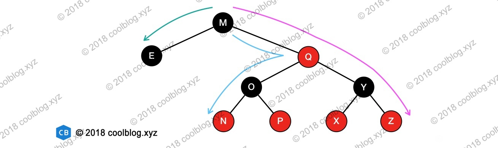
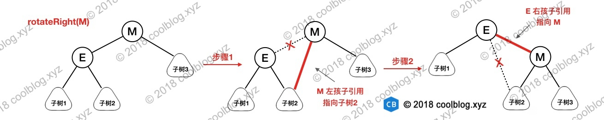

1.红黑树简介
红黑树是一种自平衡的二叉查找树，是一种高效的查找树。它是由 Rudolf Bayer 于1978年发明，在当时被称为对称二叉 B 树(symmetric binary B-trees)。后来，在1978年被 Leo J. Guibas 和 Robert Sedgewick 修改为如今的红黑树。红黑树具有良好的效率，它可在 O(logN) 时间内完成查找、增加、删除等操作。因此，红黑树在业界应用很广泛，比如 Java 中的 TreeMap，JDK 1.8 中的 HashMap、C++ STL 中的 map 均是基于红黑树结构实现的。考虑到红黑树是一种被广泛应用的数据结构，所以我们很有必要去弄懂它。
2.红黑树的性质
学过二叉查找树的同学都知道，普通的二叉查找树在极端情况下可退化成链表，此时的增删查效率都会比较低下。为了避免这种情况，就出现了一些自平衡的查找树，比如 AVL，红黑树等。这些自平衡的查找树通过定义一些性质，将任意节点的左右子树高度差控制在规定范围内，以达到平衡状态。以红黑树为例，红黑树通过如下的性质定义实现自平衡：
- 节点是红色或黑色。
- 根是黑色。
- 所有叶子都是黑色（叶子是NIL节点）。
- 每个红色节点必须有两个黑色的子节点。（从每个叶子到根的所有路径上不能有两个连续的红色节点。）
- 从任一节点到其每个叶子的所有简单路径都包含相同数目的黑色节点（简称黑高）。
有了上面的几个性质作为限制，即可避免二叉查找树退化成单链表的情况。但是，仅仅避免这种情况还不够，这里还要考虑某个节点到其每个叶子节点路径长度的问题。如果某些路径长度过长，那么，在对这些路径上的及诶单进行增删查操作时，效率也会大大降低。这个时候性质4和性质5用途就凸显了，有了这两个性质作为约束，即可保证任意节点到其每个叶子节点路径最长不会超过最短路径的2倍。原因如下：
当某条路径最短时，这条路径必然都是由黑色节点构成。当某条路径长度最长时，这条路径必然是由红色和黑色节点相间构成（性质4限定了不能出现两个连续的红色节点）。而性质5又限定了从任一节点到其每个叶子节点的所有路径必须包含相同数量的黑色节点。此时，在路径最长的情况下，路径上红色节点数量 = 黑色节点数量。该路径长度为两倍黑色节点数量，也就是最短路径长度的2倍。举例说明一下，请看下图：

上图画出了从根节点 M 出发的到其叶子节点的最长和最短路径。这里偷懒只画出了两条最长路径，实际上最长路径有4条，分别为：
M -> Q -> O -> N
M -> Q -> O -> p
M -> Q -> Y -> X
M -> Q -> Y -> Z
长度为4，最短路径为 M -> E，长度为2。最长路径的长度正好为最短路径长度的2倍。
前面说了关于红黑树的一些性质，这里还需要补充一些其他方面的东西。在红黑树简介一节中说到红黑树被发明出来的时候并不叫红黑树，而是叫做对称二叉 B 树，从名字中可发现红黑树和 B 树（这里指的是2-3树）或许有一定的关联，事实也正是如此。如果对红黑树的性质稍加修改，就能让红黑树和B树形成一一对应的关系。关于红黑树和 B 树关系的细节这里不展开说明了，有兴趣的同学可以参考《算法》第4版，那本书上讲的很透彻。
3.红黑树操作
红黑树的基本操作和其他树形结构一样，一般都包括查找、插入、删除等操作。前面说到，红黑树是一种自平衡的二叉查找树，既然是二叉查找树的一种，那么查找过程和二叉查找树一样，比较简单，这里不再赘述。相对于查找操作，红黑树的插入和删除操作就要复杂的多。尤其是删除操作，要处理的情况比较多，不过大家如果静下心来去看，会发现其实也没想的那么难。好了，废话就说到这，接下来步入正题吧。
3.1 旋转操作
在分析插入和删除操作前，这里需要插个队，先说明一下旋转操作，这个操作在后续操作中都会用得到。旋转操作分为左旋和右旋，左旋是将某个节点旋转为其右孩子的左孩子，而右旋是节点旋转为其左孩子的右孩子。这话听起来有点绕，所以还是请看下图：
上图包含了左旋和右旋的示意图，这里以右旋为例进行说明，右旋节点 M 的步骤如下：
- 将节点 M 的左孩子引用指向节点 E 的右孩子
- 将节点 E 的右孩子引用指向节点 M，完成旋转

上面分析了右旋操作，左旋操作与此类似，大家有兴趣自己画图试试吧，这里不再赘述了。旋转操作本身并不复杂，这里先分析到这吧。
3.2 插入
红黑树的插入过程和二叉查找树插入过程基本类似，不同的地方在于，红黑树插入新节点后，需要进行调整，以满足红黑树的性质。性质1规定红黑树节点的颜色要么是红色要么是黑色，那么在插入新节点时，这个节点应该是红色还是黑色呢？答案是红色，原因也不难理解。如果插入的节点是黑色，那么这个节点所在路径比其他路径多出一个黑色节点，这个调整起来会比较麻烦（参考红黑树的删除操作，就知道为啥多一个或少一个黑色节点时，调整起来这么麻烦了）。如果插入的节点是红色，此时所有路径上的黑色节点数量不变，仅可能会出现两个连续的红色节点的情况。这种情况下，通过变色和旋转进行调整即可，比之前的简单多了。
接下来，将分析插入红色节点后红黑树的情况。这里假设要插入的节点为 N，N 的父节点为 P，祖父节点为 G，叔叔节点为 U。插入红色节点后，会出现5种情况，分别如下：
3.2.1 情况一
插入的新节点 N 是红黑树的根节点，这种情况下，我们把节点 N 的颜色由红色变为黑色，性质2（根是黑色）被满足。同时 N 被染成黑色后，红黑树所有路径上的黑色节点数量增加一个，性质5（从任一节点到其每个叶子的所有简单路径都包含相同数目的黑色节点）仍然被满足。
3.2.2 情况二
N 的父节点是黑色，这种情况下，性质4（每个红色节点必须有两个黑色的子节点）和性质5没有受到影响，不需要调整。
3.2.3 情况三
N 的父节点是红色（节点 P 为红色，其父节点必然为黑色），叔叔节点 U 也是红色。由于 P 和 N 均为红色，所有性质4被打破，此时需要进行调整。这种情况下，先将 P 和 U 的颜色染成黑色，再将 G 的颜色染成红色。此时经过 G 的路径上的黑色节点数量不变，性质5仍然满足。但需要注意的是 G 被染成红色后，可能会和它的父节点形成连续的红色节点，此时需要递归向上调整。
3.2.4 情况四
N 的父节点为红色，叔叔节点为黑色。节点 N 是 P 的右孩子，且节点 P 是 G 的左孩子。此时先对节点 P 进行左旋，调整 N 与 P 的位置。接下来按照情况五进行处理，以恢复性质4。
3.2.5 情况五
N 的父节点为红色，叔叔节点为黑色。N 是 P 的左孩子，且节点 P 是 G 的左孩子。此时对 G 进行右旋，调整 P 和 G 的位置，并互换颜色。经过这样的调整后，性质4被恢复，同时也未破坏性质5。
3.2.6 插入总结
上面五种情况中，情况一和情况二比较简单，情况三、四、五稍复杂。但如果细心观察，会发现这三种情况的区别在于叔叔节点的颜色，如果叔叔节点为红色，直接变色即可。如果叔叔节点为黑色，则需要选选择，再交换颜色。当把这三种情况的图画在一起就区别就比较容易观察了，如下图：
3.3 删除
相较于插入操作，红黑树的删除操作则要更为复杂一些。删除操作首先要确定待删除节点有几个孩子，如果有两个孩子，不能直接删除该节点。而是要先找到该节点的前驱（该节点左子树中最大的节点）或者后继（该节点右子树中最小的节点），然后将前驱或者后继的值复制到要删除的节点中，最后再将前驱或后继删除。由于前驱和后继至多只有一个孩子节点，这样我们就把原来要删除的节点有两个孩子的问题转化为只有一个孩子节点的问题，问题被简化了一些。我们并不关心最终被删除的节点是否是我们开始想要删除的那个节点，只要节点里的值最终被删除就行了，至于树结构如何变化，这个并不重要。
红黑树删除操作的复杂度在于删除节点的颜色，当删除的节点是红色时，直接拿其孩子节点补空位即可。因为删除红色节点，性质5（从任一节点到其每个叶子的所有简单路径都包含相同数目的黑色节点）仍能够被满足。当删除的节点是黑色时，那么所有经过该节点的路径上的黑节点数量少了一个，破坏了性质5。如果该节点的孩子为红色，直接拿孩子节点替换被删除的节点，并将孩子节点染成黑色，即可恢复性质5。但如果孩子节点为黑色，处理起来就要复杂的多。分为6种情况，下面会展开说明。
在展开说明之前，我们先做一些假设，方便说明。这里假设最终被删除的节点为X（至多只有一个孩子节点），其孩子节点为N，X的兄弟节点为S，S的左节点为SL，右节点为 SR。接下来讨论是建立在节点 X 被删除，节点 N 替换X的基础上进行的。这里说明把被删除的节点X特地拎出来说一下的原因是防止大家误以为节点N会被删除，不然后面就会看不明白。
3.3.1 情况一
N 是新的根。在这种情形下，我们就做完了。我们从所有路径去除了一个黑色节点，而新根是黑色的，所以性质都保持着。
上面是维基百科中关于红黑树删除的情况一说明，由于没有配图，看的有点晕。经过思考，我觉得可能会是下面这种情形：
要删除的节点 X 是根节点，且左右孩子节点均为空节点，此时将节点 X 用空节点替换完成删除操作。
可能还有其他情形，大家如果知道，烦请告知。
3.3.2 情况二
S 为红色，其他节点为黑色。这种情况下可以对 N 的父节点进行左旋操作，然后互换 P 与 S 颜色。但这并未结束，经过节点 P 和 N 的路径删除前有3个黑色节点（P -> X -> N），现在只剩两个了（P -> N）。比未经过 N 的路径少一个黑色节点，性质5仍不满足，还需要继续调整。不过此时可以按照情况四、五、六进行调整。
3.3.2 情况三
N 的父节点，兄弟节点 S 和 S 的孩子节点均为黑色。这种情况下可以简单的把 S 染成红色，所有经过 S 的路径比之前少了一个黑色节点，这样经过 N 的路径和经过 S 的路径黑色节点数量一致了。但经过 P 的路径比不经过 P 的路径少一个黑色节点，此时需要从情况一开始对 P 进行平衡处理。

3.3.4 情况四
N 的父节点为红色，叔叔节点为黑色。节点 N 是 P 的右孩子，且节点 P 是 G 的左孩子。此时先对节点 P 进行左旋，调整 N 与 P 的位置。接下来按照情况五进行处理，以恢复性质4。

这里需要特别说明一下，上图中的节点 N 并非是新插入的节点。当 P 为红色时，P 有两个孩子节点，且孩子节点均为黑色，这样从 G 出发到各叶子节点路径上的黑色节点数量才能保持一致。既然 P 已经有两个孩子了，所以 N 不是新插入的节点。情况四是由以 N 为根节点的子树中插入了新节点，经过调整后，导致 N 被变为红色，进而导致了情况四的出现。考虑下面这种情况（PR 节点就是上图的 N 节点）：
3.3.5 情况五
S 为黑色，S 的左孩子为红色，右孩子为黑色。N 的父节点颜色可红可黑，且 N 是 P 左孩子。这种情况下对 S 进行右旋操作，并互换 S 和 SL 的颜色。此时，所有路径上的黑色数量仍然相等，N 兄弟节点的由 S 变为了 SL，而 SL 的右孩子变为红色。接下来我们到情况六继续分析。
3.3.6 情况六
S 为黑色，S 的右孩子为红色。N 的父节点颜色可红可黑，且 N 是其父节点左孩子。这种情况下，我们对 P 进行左旋操作，并互换 P 和 S 的颜色，并将 SR 变为黑色。因为 P 变为黑色，所以经过 N 的路径多了一个黑色节点，经过 N 的路径上的黑色节点与删除前的数量一致。对于不经过 N 的路径，则有以下两种情况：
- 该路径经过 N 新的兄弟节点 SL ，那它之前必然经过 S 和 P。而 S 和 P 现在只是交换颜色，对于经过 SL 的路径不影响。
- 该路径经过 N 新的叔叔节点 SR，那它之前必然经过 P、 S 和 SR，而现在它只经过 S 和 SR。在对 P 进行左旋，并与 S 换色后，经过 SR 的路径少了一个黑色节点，性质5被打破。另外，由于 S 的颜色可红可黑，如果 S 是红色的话，会与 SR 形成连续的红色节点，打破性质4（每个红色节点必须有两个黑色的子节点）。此时仅需将 SR 由红色变为黑色即可同时恢复性质4和性质5（从任一节点到其每个叶子的所有简单路径都包含相同数目的黑色节点。）。
3.3.7 删除总结
红黑树删除的情况比较多，大家刚开始看的时候可能会比较晕。可能会产生这样的疑问，为啥红黑树会有这种删除情况，为啥又会有另一种情况，它们之间有什么联系和区别？和大家一样，我刚开始看的时候也有这样的困惑，直到我把所有情况对应的图形画在一起时，拨云见日，一切都明了了。此时天空中出现了4个字，原来如此、原来如此、原来如此。所以，请看图吧：
4.总结
红黑树是一种重要的二叉树，应用广泛，但在很多数据结构相关的书本中出现的次数并不多。很多书中要么不说，要么就一笔带过，并不会进行详细的分析，这可能是因为红黑树比较复杂的缘故。我在学习红黑树的时候也找了很多资料，但总体感觉讲的都不太好。尤其是在我学习删除操作的时候，很多资料是实在人看不下去，看的我很痛苦。直到我看到维基百科上关于红黑树的分析时，很是欣喜。这篇文章分析的很有条理，言简意赅，比很多资料好了太多。本文对红黑树的分析也主要参考了维基百科中的红黑树分析，并对维基百科中容易让人产生疑问和误解的地方进行了说明。同时维基百科中文版红黑树文中的图片较为模糊，这里我重新进行了绘制。需要说明的是，维基百科中文版无法打开了，文中关于维基百科的链接都是英文版的。另外在给大家推荐一个数据结构可视化的网站，里面包含常见数据结构可视化过程，地址为：t.cn/RZFgryr。
另外，由于红黑树本身比较复杂，实现也较为复杂。在写这篇文章之前，我曾尝试过用 Java 语言实现红黑树的增删操作，最终只写出了新增节点操作，删除没做出来。而且自己写的新增逻辑实在太繁琐，写的不好看，没法拿出来 show。所以最后把 Java 中的 TreeMap 增删相关源码拷出来，按照自己的需求把源码修改了一下，也勉强算是实现了红黑树吧。代码放到了 github 上，传送门 -> RBTree.java。
最后，如果你也在学习红黑树，希望这篇文章能够帮助到你。另外，由于红黑树本身比较复杂，加之本人水平有限，难免会出一些错误。如果有错，还望大家指出来，我们共同讨论。